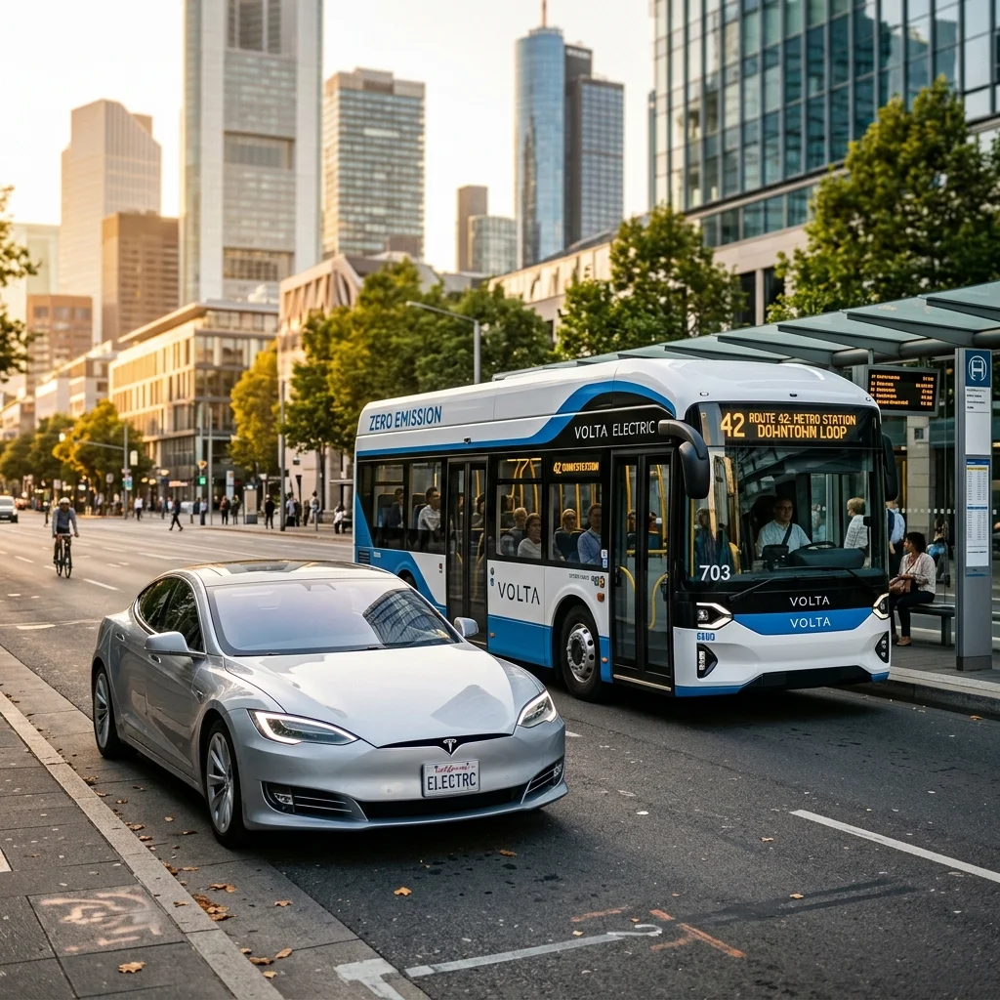

Carro ou transporte público: qual é mais barato no dia a dia?

Ter um carro próprio ou depender de transporte público? Essa é uma dúvida comum — e a resposta não é tão óbvia quanto parece. Muita gente acredita que o transporte público é sempre mais barato. Outras defendem que o carro oferece mais conforto e liberdade. Mas quando colocamos tudo na ponta do lápis, o que realmente vale a pena?
Neste artigo, você vai descobrir qual opção é mais barata no dia a dia, considerando custos reais, diferentes perfis de uso e o impacto no seu bolso.
👉 Se quiser comparar com números reais, você pode usar o Simulador principal de custo do carro para ver quanto seu veículo realmente custa por mês.
Carro vs transporte público: qual é a diferença real?
A principal diferença entre carro e transporte público está na natureza do custo:
- Carro: custos fixos (IPVA, seguro, depreciação) + custos variáveis (combustível, manutenção).
- Transporte público: custo estritamente por uso (passagem).
Isso muda completamente a forma como você gasta dinheiro. No carro, você paga mesmo sem girar a chave na ignição. No transporte público, a despesa só ocorre quando você efetivamente se desloca.
Quanto custa manter um carro por mês?
Ter um carro envolve vários custos que muitas vezes passam despercebidos pelo proprietário, mas que pesam muito no final do ano.
Principais gastos do carro: Combustível, Manutenção, Seguro, IPVA e a Depreciação (perda de valor de revenda). Uma simulação média no Brasil aponta:
- Carro Popular: R$ 600 a R$ 1.000 por mês.
- Carro Médio: R$ 900 a R$ 1.500 por mês.
👉 Quer ver o valor exato para o seu veículo hoje? Use o Simulador principal de custo do carro.
Quanto custa usar transporte público?
O transporte público tem uma lógica financeira bem mais direta e previsível. No Brasil, os custos médios giram em torno de:
- Ônibus municipal: R$ 4,00 a R$ 6,00.
- Metrô/Trem: R$ 4,40 a R$ 7,00.
Simulação mensal: se você usa transporte público duas vezes por dia (ida e volta do trabalho ou estudo), em um mês com 22 dias úteis, o seu total mensal ficaria entre R$ 176 e R$ 308. Comparado ao custo de manter um carro, a economia inicial é inegável.
Comparação direta: carro vs transporte público
Colocando os valores médios lado a lado em uma análise mensal simplificada:
| Perfil | Custo Médio Mensal |
|---|---|
| Carro Particular | R$ 800,00 a R$ 1.200,00 |
| Transporte Público | R$ 200,00 a R$ 300,00 |
| Potencial de Economia | R$ 600 a R$ 900 por mês |
O custo por km: uma forma mais justa de comparar
Para uma análise precisa, o ideal é olhar o custo por quilômetro. Se o seu carro custa R$ 1.000 por mês e você roda 1.000 km, seu custo é de R$ 1,00 por km. No transporte público, o custo por km tende a cair quanto maior for a distância da viagem, já que o valor da passagem é fixo.
👉 Cálculo preciso: Você pode calcular seu índice individual usando a Calculadora de custo por km.
Quando o carro pode ser mais vantajoso?
Apesar de ser mais caro na maioria dos casos, o automóvel pode compensar em cenários específicos:
- Uso intenso: quando você roda muito todos os dias, diluindo o custo fixo.
- Lotação: famílias ou grupos que dividem o custo da viagem, tornando o preço por pessoa competitivo.
- Localização: em regiões com transporte público precário, ineficiente ou inseguro.
- Valorização do Tempo: o ganho de conforto e economia de tempo pode justificar o gasto extra para muitos perfis de profissionais.
E o transporte por aplicativo (Uber/99)?
O transporte por aplicativo funciona como um meio-termo interessante: oferece a conveniência do carro sem o compromisso dos custos fixos anuais. É mais caro que o ônibus, mas frequentemente mais barato do que manter um carro próprio parado na garagem.
👉 Para ver qual desses cenários bate no seu bolso, use a Calculadora carro vs Uber.
Custos invisíveis que mudam o jogo
Um dos maiores erros é focar apenas no gasto com gasolina. A depreciação e o desgaste mecânico futuro são custos reais que "comem" seu patrimônio silenciosamente.
👉 Para enxergar esse prejuízo invisível, use a Calculadora de depreciação de carro.
Conclusão: qual opção vale mais a pena?
Na grande maioria dos casos urbanos, o transporte público é imbatível no quesito economia. No entanto, a decisão pessoal deve levar em conta o equilíbrio entre seu orçamento e a necessidade de flexibilidade, conforto e tempo.
O mais importante é não basear sua escolha apenas em uma "sensação" de gasto, mas sim em dados concretos sobre a sua rotina.
Quer descobrir qual é a melhor opção para você agora?
👉 Use o Simulador principal de custo do carro e compare o custo real do seu veículo com suas alternativas.